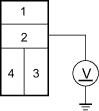
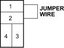
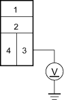

- Check the No. 4 (20A) fuse in the under-hood fuse/relay box, and the No. 14 (10A) fuse in the under-dash fuse/relay box.
Is the fuse (s) OK?
YES - Go to step 2.
NO - Replace the fuse (s) and recheck. 
- Remove the radiator fan relay from the under-hood fuse/relay box, and test it, refer to the 2001 Civic Shop Manual (see page 22-80).
Is the relay OK?
YES - Go to step 3.
NO - Replace the radiator fan relay.
- Measure the voltage between the No. 2 terminal of the radiator fan relay 4P socket and body ground.
RADIATOR FAN RELAY 4P SOCKET

Terminal side of male terminals
Is there battery voltage?
YES - Go to step 4.
NO - Replace the under-hood fuse/relay box.

- Connect the No. 1 and No. 2 terminals of the radiator fan relay 4P socket with a jumper wire.
RADIATOR FAN RELAY 4P SOCKET

Terminal side of male terminals
Does the radiator fan run?
YES - Go to step 5.
NO - Go to step 6.
- Disconnect the jumper wire, and turn the ignition switch ON (II). Check for voltage between the No. 3 terminal of the radiator fan relay 4P socket and body ground.
RADIATOR FAN RELAY 4P SOCKET

Terminal side of male terminals
Is there battery voltage?
YES - Go to step 9.
NO - Check for an open in the wire between the under-hood fuse/relay box and under-dash fuse/relay box.